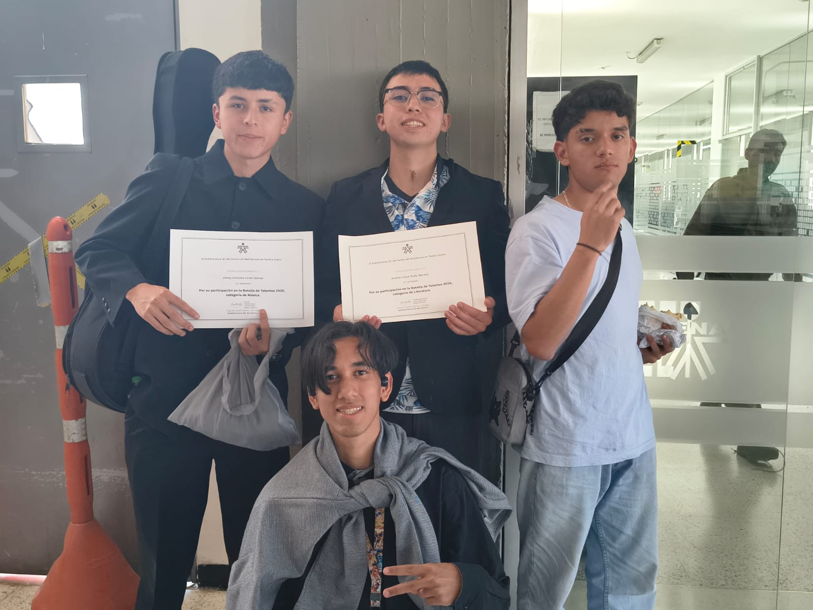

Presentaciones individuales
Aprendices mostraron su estilo personal en rutinas que mezclaron disciplina y espontaneidad sobre el escenario principal.
SENA · Memoria del evento
Un evento donde el talento, la creatividad y la pasión fueron los protagonistas.
Durante una jornada llena de energía, aprendices del SENA subieron al escenario para compartir lo que más los apasiona: bailar, escribir, pintar y cantar. Esta página guarda esa memoria — las fotos, los videos y las historias de cada batalla — para que el talento que vimos ese día no se quede solo en el recuerdo.

El programa del día
Así se vivió la Batalla de Talentos: cada categoría tuvo su propio escenario, su propio público y su propia forma de emocionar.
Escenario 01
El escenario se llenó de movimiento desde el primer compás. Parejas y grupos presentaron coreografías de distintos géneros, combinando técnica, expresión corporal y una conexión genuina con el público que no dejó de aplaudir.
Aprendices mostraron su estilo personal en rutinas que mezclaron disciplina y espontaneidad sobre el escenario principal.
Equipos completos sincronizaron pasos y formaciones, demostrando horas de práctica y un trabajo en equipo notable.
Giros, levantamientos y cambios de ritmo sorpresivos arrancaron ovaciones del público en varias presentaciones.


Escenario 02
Aquí el escenario fue la voz y el papel. Participantes compartieron poesía, cuentos cortos y piezas de escritura creativa que hablaron de identidad, sueños y la propia experiencia de ser aprendiz del SENA.
Versos leídos en voz alta que exploraron desde el amor hasta la disciplina del aprendizaje técnico.
Relatos breves con giros inesperados que mantuvieron al público en silencio absoluto hasta el final.
Textos libres donde cada participante encontró su propia voz para contar una historia personal.
"Escribir es la forma más silenciosa de subir al escenario."


Escenario 03
Lienzos en blanco, pinceles listos y un tiempo límite: así comenzó la Batalla de Pintura. Cada participante interpretó un tema libre, llenando el espacio de color, técnica y una mirada muy personal del arte.


Tuve la oportunidad de participar en la competencia de pintura, y aunque no obtuve el primer puesto, fue una de las experiencias más enriquecedoras del evento. Frente al lienzo en blanco aprendí nuevas técnicas que no conocía, experimenté con mezclas de color que nunca había intentado, y descubrí que el verdadero reto no era ganar, sino atreverme a crear bajo presión y tiempo limitado.
Más allá del resultado, lo que más valoro es haber conocido a personas increíblemente talentosas, cada una con un estilo propio, y haber compartido con ellas ese momento de concentración, nervios y disfrute. La Batalla de Pintura me dejó algo que ningún primer lugar podría darme: la certeza de que disfruté cada minuto de ese lienzo en blanco.
Escenario 04
La jornada cerró con sonido en vivo. Entre voces e instrumentos, los participantes demostraron que la música también es una forma de contar quiénes son, dividida en dos momentos: lo vocal y lo instrumental.
Baladas, géneros urbanos y clásicos reinterpretados mostraron el rango y la sensibilidad vocal de cada participante. Algunos arriesgaron con versiones propias, otros conmovieron al público con interpretaciones cargadas de emoción.


Guitarras, teclados y otros instrumentos llenaron el escenario de melodías propias y versiones instrumentales. Cada interpretación reveló años de práctica y un dominio técnico que el público reconoció con aplausos prolongados.

Escenario 05 · Cierre
La jornada cerró reconociendo a los ganadores de cada categoría, pero, sobre todo, celebrando el esfuerzo, la entrega y el talento de cada persona que se atrevió a subir al escenario.